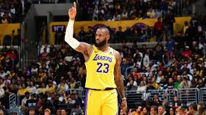
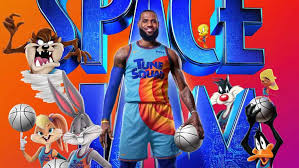

Bem-vindo ao início da sua carreira no basquete! Você está começando sua jornada como jogador de basquete. Sua primeira decisão é escolher entre se concentrar no aprimoramento de suas habilidades individuais ou focar no trabalho em equipe.
Você decide aprimorar suas habilidades individuais, treinando arremessos, dribles e a defesa. Sua dedicação resulta em um aumento significativo em seu desempenho durante os jogos.
Você decide focar no trabalho em equipe, participando de treinamentos conjuntos e desenvolvendo uma boa química com seus colegas de equipe. Isso melhora a coordenação e o desempenho geral do time.
Com suas habilidades individuais afiadas, você se destaca no Torneio Local e atrai a atenção de olheiros e técnicos. Seus desempenhos são notáveis e você é convidado para um time profissional.
O foco no trabalho em equipe leva a uma excelente performance no Torneio Local. Seu time vence o torneio, e sua habilidade em colaborar é reconhecida por vários times profissionais.
Você assina com um time profissional e começa a jogar em ligas maiores. Seu talento e dedicação se destacam, e você rapidamente se torna um jogador chave para sua equipe.
Parabéns! Sua carreira no basquete está em ascensão.
Assinar com um time profissional após vencer o torneio local proporciona uma excelente base para sua carreira. Sua reputação como jogador de equipe é um grande trunfo e você começa a se destacar nas ligas maiores.
Parabéns! Você está no caminho certo para se tornar uma estrela do basquete.